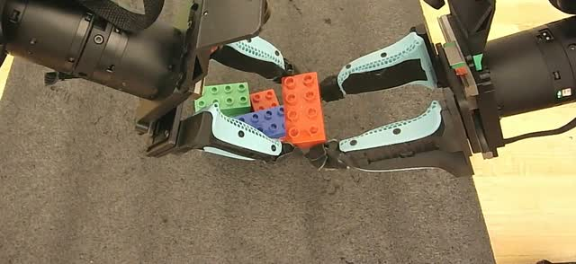
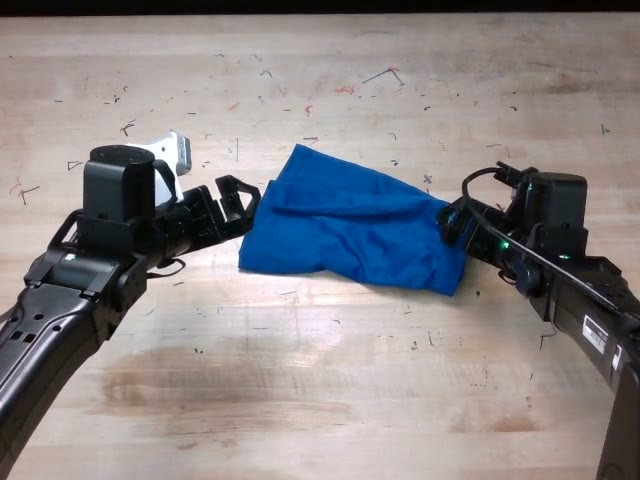
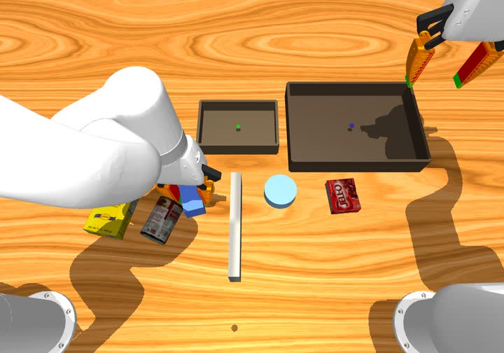
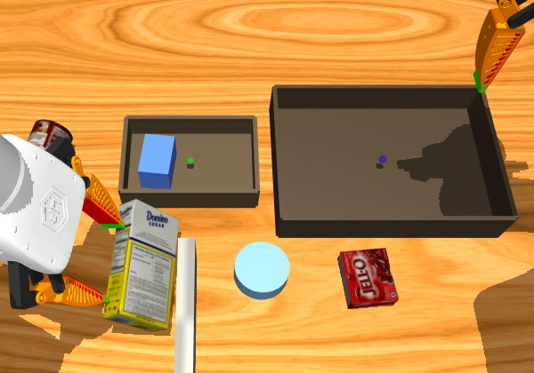
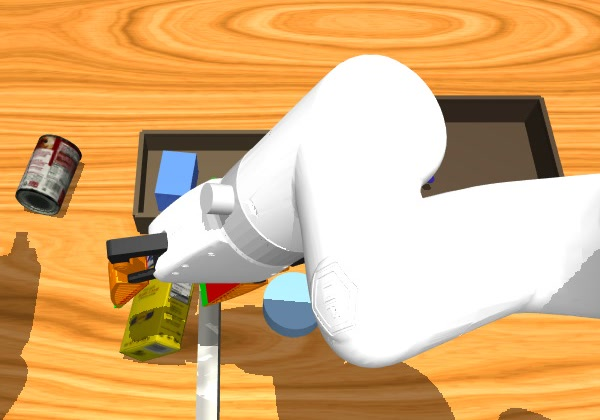
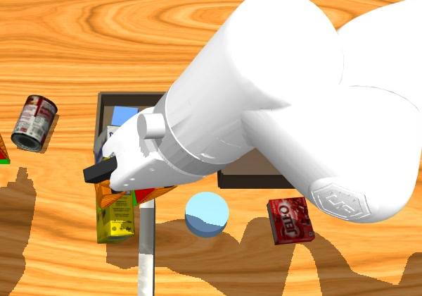
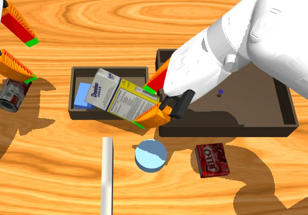
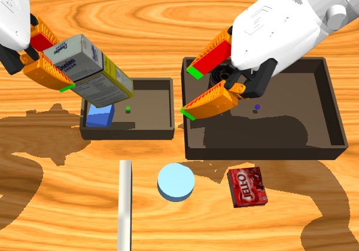
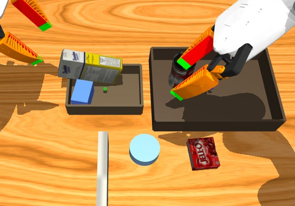

Abstract
Robot policies predominantly learn from human-collected data emphasizing competent behavior, limiting coverage of the low-level behaviors needed to support autonomous improvement. We study how a form of midtraining can be used to build coverage over diverse low-level behaviors that connect challenging states of the robot and its environment to states from which further progress is possible (“connected behavioral coverage”). We also examine how this coverage supports downstream adaptation and online improvement. To this end, we introduce β-DATA, a dataset collected via adversarial teleoperation, where a human adversary reversibly perturbs the environment while a human operator continues toward completion without resetting. We relabel trajectory segments with local outcomes in natural language and finetune a pretrained policy conditioned on recent action history. The resulting policy exhibits sustained use of more low-level behaviors. Across manipulation tasks in simulation and on three real-robot platforms, our approach yields more favorable data scaling laws, better zero-shot generalization, and more effective use of additional rollout time than training on standard demonstrations. During online finetuning, these policies need fewer rollouts to collect successful experience and reach higher success rates, suggesting that midtraining can prepare robots for both more robust task execution and continued autonomous improvement.
Introduction
“Pack the jar” tells the robot which object to move. When the jar lies on its side, the robot must still choose where to grasp it and how to lift it. Standard demonstrations emphasize competent execution. They show recovery only when an operator happens to encounter a difficulty and work through it.
β-DATA: Exploratory Policies via Adversarial Midtraining
How do we collect β-DATA?
The adversary chooses where the operator will need to adapt. On a real robot, a second person can move a packed item back to the table, rejoin two bricks, or change the goal. In simulation, a program perturbs the scene. The operator chooses how to respond and keeps working from the changed state. The demonstration records the disruption, the response and the return to the task.
Connected behavioral coverage
Connected behavioral coverage (CBC) measures the routes a dataset contains between object–location states. An arrow records a demonstrated change of location. Repeating the same transfer adds no new edge. In simulated packing, both datasets place the cracker box on the table and in the same trays. They differ in which transfers an operator demonstrates.
| Training data | Distinct edges |
|---|---|
| Standard demonstrations | 3 |
| β-DATA | 7 |
Measuring connected behavioral coverage
The explorer includes all annotated demonstrations. To select the demonstrations under the matched budget, we shuffle the demonstrations of a dataset and keep adding whole demonstrations in that order for as long as they fit within the budget. β-DATA covers more distinct transfers in each comparison.
β-DATA contains more distinct directed edges at matched data budgets
Domain
View chart values
| Domain | Standard | β-DATA |
|---|---|---|
| Simulated packing | 54 | 85 |
| Real-world packing | 72 | 125 |
| LEGO disassembly | 15 | 19 |
| Domain | Standard | β-DATA |
|---|---|---|
| Simulated packing | 0.22 | 0.30 |
| Real-world packing | 0.15 | 0.37 |
We observe that CBC is higher with β-DATA and grows more rapidly with the amount of data in both packing domains, as indicated by steeper log-log slopes (0.30 vs. 0.22 in simulation and 0.37 vs. 0.15 in the real world).
Midtraining on the collected data
An episode can include actions that undo part of the original goal. A local outcome describes what the operator accomplished during that segment. Recent actions tell the policy whether the gripper has just approached, slipped or started a retry.
Split the rollout at a change of local outcome. Label each segment in language, such as “pack the sugar box into the medium tray.” Apply the same procedure to standard demonstrations.
Express recent arm actions relative to the current state. Keep gripper commands absolute and encode the history as input to the policy.
From the current observation, local instruction and recent actions
Environments, Tasks, and Robot Setups
The experiments test bimanual manipulation in simulation and on three real platforms. Each domain pairs standard demonstrations with a β-DATA dataset of similar duration.
Simulated grocery packing
Move groceries between trays. Short tasks require a placement or another small change. Medium tasks require several direct placements. Long tasks require rearrangement or a larger set of placements. In-distribution tasks appeared in training. Out-of-distribution tasks have held-out goals and configurations.
Standard 6.1 h · β-DATA 5.9 h
Real-world grocery packing (xArm)
Pack each named item into its assigned container. An early placement can leave too little room to grasp or insert the next item.
Standard 4.4 h · β-DATA 4.9 h

LEGO disassembly and sorting (YAM)
Pull interlocking bricks apart and sort them into their assigned trays. Interlock starts with a single assembly. Double starts with two assemblies.
Standard 4.0 h · β-DATA 4.0 h

Garment folding (Raiden YAM)
Fold the pant legs together, then fold the pants in half. For a T-shirt, fold in the sleeves and fold the garment in half, then in half again.
Pants · Standard 8.1 h · β-DATA 7.9 h
T-shirt · Standard 4.2 h · β-DATA 4.6 h
Results
Result 1: Zero-shot successes from β-DATA compared with standard demonstrations
A success requires the whole task to be complete. Progress gives partial credit for correct placements, separated and sorted bricks, or completed folds. β-DATA improves both measures across all reported task groups.
| Task | Successes / trials | Progress (%) | ||
|---|---|---|---|---|
| Standard | β-DATA | Standard | β-DATA | |
| Simulation | ||||
| Short, out-of-distribution | 136/150 | 148/150 | 95.4 | 99.4 |
| Medium, in-distribution | 121/150 | 137/150 | 88.4 | 94.3 |
| Medium, out-of-distribution | 142/200 | 183/200 | 84.9 | 94.7 |
| Long, in-distribution | 50/250 | 85/250 | 41.4 | 58.9 |
| Long, out-of-distribution | 98/250 | 144/250 | 64.0 | 77.6 |
| Real robot (out-of-distribution) | ||||
| LEGO assembly (YAM) | 5/20 | 19/20 | 43.3 | 96.7 |
| Two LEGO assemblies (YAM) | 2/20 | 6/20 | 35.8 | 59.4 |
| Grocery packing (xArm) | 4/20 | 12/20 | 45.0 | 74.4 |
| Pants folding (Raiden YAM) | 3/20 | 14/20 | 47.5 | 83.9 |
| T-shirt folding (Raiden YAM) | 5/20 | 9/20 | 63.9 | 76.7 |
Standard denotes the policy trained on standard demonstrations. The twenty simulated packing tasks consist of in-distribution tasks represented during training and out-of-distribution tasks with held-out goals and configurations. We provide a six-minute limit for any evaluation rollout in simulation and a five-minute limit for real-world xArm packing. The real-robot rows use held-out configurations.
Qualitative behavior
Watch what changes after a failed attempt. A different grasp can lift a fallen jar, separate a brick assembly or carry a fold through to completion.
Recovery after a failed placement in simulated packing, from the same initial state

Play the replay or move the slider.
Frames from the rollout
Standard demonstrations



β-DATA



On an out-of-distribution task, both policies start from the same state and are instructed to pack the sugar box into the medium tray.
Repeated grasp attempts and recovery in real-world packing
LEGO disassembly and sorting rollouts
Pants folding rollouts
T-shirt folding rollouts
The two rollouts start from different layouts.
Result 2: β-DATA scales more favorably with both training data and rollout time (i.e., test-time compute)
Standard demonstrations lead at the smallest training budget. β-DATA leads at each larger budget. Under the largest matched budget, more time to act improves success for both policies, with a larger gain for β-DATA.
Zero-shot success as a function of the amount of midtraining data across four matched data budgets
Data budget in recorded hours
View chart values
| Hours | Standard | β-DATA |
|---|---|---|
| 0.65 | 16.5% | 6.0% |
| 1.3 | 26.8% | 43.2% |
| 2.6 | 46.5% | 60.3% |
| 5.2 | 58.7% | 69.3% |
Success by rollout limit
Rollout limit (minutes)
View chart values
| Minutes | Standard | β-DATA |
|---|---|---|
| 2 | 47.8% | 55.5% |
| 4 | 56.7% | 65.2% |
| 6 | 58.7% | 69.3% |
Rollout time at every data budget
| Hours | Method | 2 min | 4 min | 6 min |
|---|---|---|---|---|
| 0.65 | Standard | 14.0% | 15.8% | 16.5% |
| 0.65 | β-DATA | 4.7% | 5.7% | 6.0% |
| 1.3 | Standard | 21.3% | 25.3% | 26.8% |
| 1.3 | β-DATA | 32.8% | 40.2% | 43.2% |
| 2.6 | Standard | 36.3% | 44.0% | 46.5% |
| 2.6 | β-DATA | 49.7% | 58.0% | 60.3% |
| 5.2 | Standard | 47.8% | 56.7% | 58.7% |
| 5.2 | β-DATA | 55.5% | 65.2% | 69.3% |
Result 3: β-DATA makes useful online experience substantially easier to collect on challenging tasks
During filtered behavioral cloning, the policy collects rollouts on a downstream task. It adds successful trajectories to its training data and updates on a mixture of those trajectories and the original demonstrations.
On held-out long-horizon tasks, the policy trained on β-DATA starts higher and improves more with online experience
Admitted successful trajectories
View chart values
| Checkpoint | Standard | β-DATA |
|---|---|---|
| Initial | 39.2% | 57.6% |
| After 50 | 52.0% | 73.2% |
For each dataset, we fit a separate law. The fitted log-odds of success depend linearly on the initial log-odds and on the logarithm of the number of admitted successful trajectories. The experience term has a steeper fitted slope for β-DATA. Rollout totals include failed attempts.
| Training data | Rollouts used | Effect of online experience |
|---|---|---|
| Standard | 3,810 | 0.20 |
| β-DATA | 160 | 0.43 |
Result 4: β-DATA improves through online finetuning on the bimanual, real-world packing task
On bimanual xArm packing, the β-DATA policy improves in both full-task success and partial progress. The policy trained on standard demonstrations improves in progress while its full-task success stays the same.
| Training data | Success (%) | Progress (%) | Rollouts used |
|---|---|---|---|
| Standard demonstrations | 20.0 → 20.0(8.1–41.6) | 45.0 → 68.3(59.4–77.2) | 82 |
| β-DATA | 60.0 → 85.0(64.0–94.8) | 74.4 → 98.3(96.7–100.0) | 28 |
Values report zero-shot → post-finetuning performance for each policy, with twenty scored trials at each checkpoint. Parentheses give the post-finetuning 95% Wilson interval for success over the twenty trials and percentile bootstrap interval for progress. Each trial begins from a new initial configuration in the workspace, hence the high variance.
Ablations of action-history conditioning and language instruction granularity
Subtask annotations improve held-out performance
Both policies do better on held-out packing tasks when they train on segment labels and receive subtask instructions during execution. The comparison changes the training labels and the instructions at evaluation together.
| Data and task | Direct execution | Hierarchical execution |
|---|---|---|
| Standard · out-of-distribution Medium | 2.5% | 71.0% |
| β-DATA · out-of-distribution Medium | 62.5% | 91.5% |
| Standard · out-of-distribution Long | 4.8% | 39.2% |
| β-DATA · out-of-distribution Long | 20.0% | 57.6% |
Action history helps sustain behavior over long horizons
With the current subtask held fixed as an input, action history helps the β-DATA policy most on long held-out tasks. History gives the policy trained on standard demonstrations a smaller gain on long held-out tasks. The effect on easier held-out groups is small.
| Data and task | Without history | With history |
|---|---|---|
| β-DATA · in-distribution Long | 28.8% | 34.0% |
| β-DATA · out-of-distribution Long | 41.6% | 57.6% |
Posterior behavioral cloning
PostBC uses uncertainty in demonstrator actions to broaden the behaviors of a policy trained on standard demonstrations. Starting from the same π0.5 checkpoint, it performs similarly to standard midtraining. β-DATA achieves higher success on both simulation splits.
| Task split | PostBC | Standard | β-DATA |
|---|---|---|---|
| 12 out-of-distribution | 64.0% | 62.7% | 79.2% |
| 8 in-distribution | 43.0% | 42.8% | 55.5% |
We midtrain a PostBC policy on the same standard demonstrations and starting from the same pretrained policy checkpoint (i.e., π0.5), using an ensemble of 20 members trained on frozen policy features and a noise scale of α = 1.
Citation
@article{kshitiz2026exploratory,
title={Exploratory Midtraining for Robot Policies},
author={{Kshitiz} and Zheyuan Hu and Robyn Wu and Yizhou Li and Yunchu Zhang and Vattanary Tevy and Kavya Tayal and Shawn Yin and Aykut Onol and Kushal Arora and Dhruv Shah and Abhishek Gupta and Zackory Erickson and Aviral Kumar},
year={2026},
journal={arXiv preprint arXiv:2611.33130},
url={https://arxiv.org/abs/2611.33130}
}